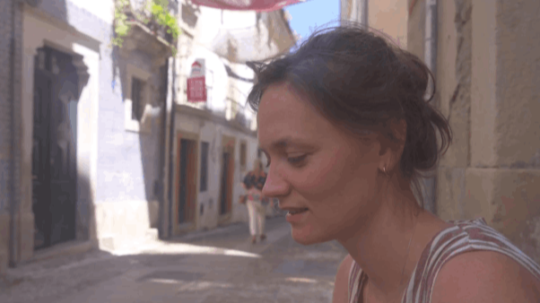

If you’re looking for a videographer in Coimbra, or just want some practical ideas to make your videos better, then this is for you. Come with us a we spend the afternoon in Coimbra, Portugal. Walking around some of our favourite areas, sharing with you some easy video tips and trying to find a shoe shop to fix Eugene's broken safari boots.
We decided to head to Coimbra to fix Eugene's broken shoe and it was a good excuse for a stoll about some of Coimbra's beautiful spots. Such as...
The University of Coimbra
Officially founded in 1290, making it the oldest university in Portugal and one of the oldest in Europe still in operation today.
Santa Cruz Church and Old Town
Santa Cruz was founded in 1131 and became one of the most important monasteries in the early days of the Portuguese kingdom. Both the first king of Portugal, Afonso Henriques, and his son Sancho I are buried there.
Mondego River
Locals and visitors use the river banks not just to walk, but to swim, paddleboard, have picnics, or watch migratory birds in the wetlands. Walking along the Mondego River, any videographer in Coimbra can spot opportunities for unique angles.
Botanical Gardens
Because it was originally designed for scientific study, the garden still includes plant collections from around the world and old greenhouses. Scenes like these can look incredible from above see more of our drone videographer Portugal work.
Finding a shoe shop in Coimbra wasn’t as easy as Google Maps suggested. We wandered past a historic church, got a little lost and finally spotted the shop just around the corner.
While waiting for the shoe repair, we took a walk and practiced some quick filming techniques. Here are a few tips that can make a huge difference in your videos:
Close-Ups
Don’t be afraid to get close to your subject! Mix wide, medium, and close-up shots. Close-ups help your viewers notice details and make your videos feel more lively and interesting.
Play with Foreground for Depth
Try putting something in front of your lens even a plant, railing, or fence. It adds depth to your shot and makes the scene feel more real and immersive. This is something a videographer Coimbra often does to make a frame more engaging.
Look for Leading Lines
Keep an eye out for lines around you, roads, railings, fences, or even paths. They naturally guide the viewer’s eyes to the main subject and make your shots feel more intentional.


Success, we got the shoe fixed!
Here’s a quick lesson in storytelling you can use for your videos. Next time you’re filming, pay attention to the small twists in your day, challenges, surprises, or little victories. Frame them with a mini story arc like this: setup, challenge, climax, resolution.
Setup / Problem: We started with a broken shoe, a small, relatable challenge that hooks your viewers.
Rising Action / Challenge: Finding a sapataria in Coimbra wasn’t as simple as Google Maps suggested. We wandered past streets, explored a historic church, and even got a little lost. The ups and downs that give your story rhythm.
Climax / Mini-Aha: Finally, we got the shoes fixed! That little moment of success is your story’s mini-climax.
Resolution / Lesson: Our afternoon reminded us that even tiny, everyday experiences can make videos engaging.
When you add the story arc, Your videos instantly feel more human, relatable, and professional, the kind of storytelling that a videographer Coimbra would use to make any project shine!

If you want help creating videos that get results, check out our videographer Portugal services.
We combine storytelling, strategy, beautiful visuals and a relaxed process. If you have any questions you can email me here,
katy@munjiri.com

Brand Video Production
Social Media Video Production
Nature Video Production
Creative Video Productions
Charity Video Production
Drone Videographer
Event Video Production
Product Video Production
Travel Video Production
Learn Video Making
Video Storytelling
Video Making Tips
Video Marketing & Social Media Strategies
Nature Stories
Behind the Scenes
Client Stories
Locations & Travel
Location
Based in Portugal and South Africa, offering video production services worldwide.
Email: katy@munjiri.com
Get updates and free resources.